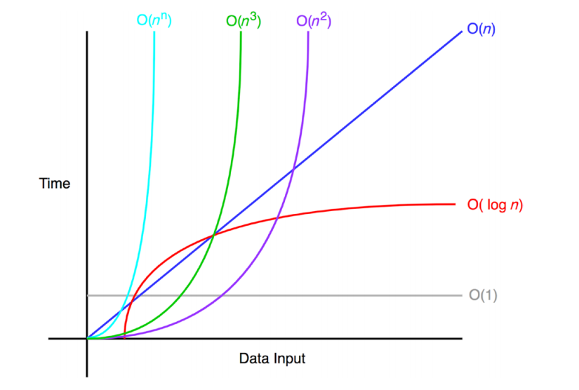
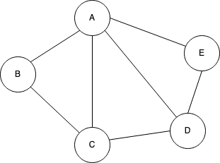
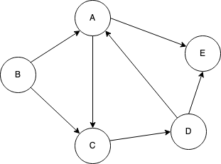

CAB301 Study Guide | 2023 Semester 1
Dr Maolin Tang | Notes for CAB301 at the Queensland University of Technology
Unit Description
Disclaimer
Everything written here is based off the QUT course content. However, there are at times parts of text that are taken from the QUT slides and most of the examples are directly from the course slides (these are referenced when done). This content is designed only for those currently studying an IT degree at QUT, do not share these resources with anyone outside of this community.
If any member of the QUT staff or a representative of such finds any issue with these guides please contact me at jeynesbrook@gmail.com and I will take these down without an argument. The last thing I want to do is cause any issues or damages to the QUT name or QUT resources. I am simply just trying to help students out with presenting the content in an easy to digest manor.
Disclaimer
All references used within this module can be found within References.
The quizzes used within this module are taken directly from the QUT slides, I do not claim them as my own work unless directly specified under the quiz.
Learning activities
Table of Contents
- 1.2.2: Introduction
- 1.2.3: What is an algorithm?
- 1.2.4: Pseudocode notations
- 1.2.5: Algorithm efficiency and algorithm analysis
- 1.2.6: Algorithm analysis - An example
- 1.2.7: Why do we need to worry about the efficiency of an algorithm
- 1.2.8: The tower of Hanoi problem
- 1.2.9: The tower of Hanoi - code example
- 1.2.10: What are data structures
Introduction
What is an algorithm?
What is an algorithm?
An algorithm is a sequence of instructions which can be followed to solve some computational problem. Due to algorithms being independent of a programming language, they can typically be implemented into any.
Pseudocode
Pseudocode is a way of writing the steps of an algorithm out in plain text without getting stuck by a specific programming language syntax.
Sometimes within pseudocode, we informally describe 'obvious' actions. For example, within the SelectionSort algorithm, we might just use the term 'swap' to describe the action.
Pseudocode notations
| Variables | Meaning |
|---|---|
| \(v \), \(w \), ... | Variable names |
| \(E \), \(F \), ... | Expressions |
| \(B \), \(C \), ... | Boolean values |
| \(N \), \(M \), ... | Integer-valued expressions |
| \(S \), \(T \), ... | (Compound) program statements |
| \(P \), \(Q \), ... | Procedure names |
| \(x \), \(y \), ... | Parameter names |
| 3.1425926, 'c', true | Primitive types |
| \(A[i] \) | Arrays / Vectors |
| \(\{4, ..., 10\} \) | Sets |
| Statements | Meaning |
|---|---|
| \((2v) + x \) | Expressions |
| \(P(x, y, ...) \) | Parameterised procedure declarations |
| \(P(E, F, ...) \) | Procedure calls |
| \(v \leftarrow E \) | Assignment |
| \(S \hspace{0.2em} T \) or \(S; T \) | Sequential composition |
| return \(E \) | Return statements |
| Conditionals | Meaning |
|---|---|
| if \(B \hspace{0.2em} S \) else \(T \) | Choice |
| if \(B \hspace{0.2em} S \) | If-then statements |
| Iterations | Meaning |
|---|---|
| while \(B \) do \(S \) | Iteration |
| for \(v \leftarrow N \) to \(M \) do \(S \) | Iteration |
| repeat \(S \) until \(B \) | Iteration (post-tested) |
Pseudocode Example
ALGORITHM ArrayMax(A[0..n - 1])
// Given an array A of length n >= 1,
// return the value of the largest number in A
max <- A[0]
for i <- 1 to n - 1 do
if A[i] > max
max <- A[i]
return max
Algorithm efficiency and algorithm analysis
Algorithm efficency
Algorithm efficiency is generally represented as a mathematical function which describes the resource requirements of the algorithm. These requirements describe the amount of data each algorithm must process before it finishes.
There are two main measures used to describe an algorithms efficiency:
- Time efficiency: A mathematical function which describes the amount of time an algorithm will take to finish in relation to its input.
- Space efficiency: A mathematical function which describes the amount of space, or storage, an algorithm must take to finish in relation to its input.
Algorithm analysis
Algorithm analysis is the process of determining how efficient an algorithm is.
Algorithm analysis is done independent of a language or machine. This is because the efficiency of an algorithm will change depending on the language implementation and processing power of the machine.
Algorithm analysis - An example
Let's take a look at an algorithm we've seen previously.
ALGORITHM ArrayMax(A[0..n - 1])
// Given an array A of length n >= 1,
// return the value of the largest number in A
max <- A[0] // c1
for i <- 1 to n - 1 do
if A[i] > max // c2
max <- A[i] // c3
return max // c4
In a worst case scenario, the computational time for this algorithm can be appoximated using the following mathematical function.
\[ T(n) = c1 + (c2+c3)(n-1)+c4 \]
where \(c1, ..., c4 \) are machine dependent, they will always have the same computation time.
Let's imagine we run this on some machine and time how long it takes to compute each expression.
- c1 = 3 micro-seconds
- c2 = 2 micro-seconds
- c3 = 3 micro-seconds
- c4 = 1 micro-seconds
\[ T(n) = 3 + (2+3)(n-1)+1 = 5n - 1 \]
We could then say:
- When \(n = 10\), \(T(10) = 5*10-1 = 49 \) micro-seconds
- When \(n = 100\), \(T(100) = 5*100-1 = 499 \) micro-seconds
- When \(n = 1000000\), \(T(1000000) = 5*1000000-1 = 4999999 \) micro-seconds
Why do we need to worry about the efficiency of an algorithm?
If computers are fast and memory cheap, why is there a need to worry about efficiency?
Consider an algorithm which can solve some problem of size \(n \) by processing \( 2^n \) cases, \(T(n) = 2^2 \). We now want to implement this on some computer which takes 0.000000005 seconds per case.
| Problem size | Solution time |
|---|---|
| 10 | 5.1 micro-seconds |
| 20 | 5.2 milli-seconds |
| 30 | 5.4 seconds |
| 40 | 1.5 hours |
| 50 | 9.3 weeks |
| 60 | 183 years |
| 70 | 1872 centuries |
| 80 | 192 million years |
The tower of Hanoi problem
How does the tower of Hanoi problem work?
Given \(n \) number of rods, and an initial rod stacked with disc incrementally getting smaller from bottom to top. The objective is to transfer the entire tower from one rod to another under the constraint that:
- You can only move one disc at a time
- You cannot place a disc on one smaller than itself
- After any move, all discs must be on a rod

Figure: Tower of Hanoi
Solving the tower of Hanoi problem
It's difficult to design an iterative algorithm to solve such a problem. This is where the power of recursive algorithms come into play.
ALGORITHM TowerOfHanoi(n, a, b, c)
// Find a solution to the problem of moving n disks from rod a to rod c
// using b as a temporary rod without violating the rules
//
// variables:
// - n: number of disks
// - a: starting rod
// - b: temporary rod
// - c: end rod
if n > 0
towerOfHanoi(n - 1, a, c, b)
move top disk from a to c
towerOfHanoi(n - 1, b, a, c)

Figure: Tower of Hanoi solution
The Tower of Hanoi - Code example
Here is an implementation of the algorithm to solve the Tower of Hanoi problem in C#
using System;
using System.Diagnostics;
class Program {
public enum Rod {
Source,
Intermediate,
Destination
}
public static void Main() {
Stopwatch sw = new Stopwatch();
Console.Write("Number of disks: ");
int diskCount = Convert.ToInt32(Console.ReadLine());
sw.Start();
TowerOfHanoi(diskCount, Rod.Source, Rod.Intermediate, Rod.Destination);
sw.Stop();
Console.WriteLine($"Computation time = {sw.ElapsedMilliseconds} milli-seconds");
}
public static void TowerOfHanoi(int n, Rod source, Rod intermediate, Rod destination) {
if (n > 0) {
TowerOfHanoi(n - 1, source, destination, intermediate);
Console.WriteLine($"Move the top disk from {source} to {destination}");
TowerOfHanoi(n - 1, intermediate, source, destination);
}
}
}
All code examples shown in the study guide will be in C# as this is the language taught in the unit. However, occasionally, you will see examples of Rust code along with C# code.
The engine that runs and formats these study guides only has support for runnable Rust code. Therefore, if I want to have runnable code, it needs to be in Rust.
Anytime there is Rust code, you can safely ignore it and just hit the run button to see the output as it will emulate (for the most part) what the C# code would output.
Be aware however, that it is very easy to timeout the program if the algorithm takes too long to run due to the constraints of the books engine.
use std::fmt; enum Rod { Source, Intermediate, Destination } impl fmt::Display for Rod { fn fmt(&self, f: &mut fmt::Formatter<'_>) -> fmt::Result { match self { Self::Source => write!(f, "Source"), Self::Intermediate => write!(f, "Intermediate"), Self::Destination => write!(f, "Destination"), } } } fn main() { // Change this value here let disk_count = 3; TowerOfHanoi(disk_count, &Rod::Source, &Rod::Intermediate, &Rod::Destination); } fn TowerOfHanoi(n: usize, source: &Rod, intermediate: &Rod, destination: &Rod) { if n > 0 { TowerOfHanoi(n - 1, source, destination, intermediate); println!("Move the top disk from {} to {}", source.to_string(), destination.to_string()); TowerOfHanoi(n - 1, intermediate, source, destination); } }
What are data Structures?
In computer science, there are many ways to store and organise collections of data, we call these collections data structures.
There are many data structures such as:
- Arrays
- Linked lists
- Binary trees
- Trees
- Graphs
- Hash tables
- etc...
No single data structure will work for all purposes, hence the need for many. This is why it's important that you can recognise the strenghs, weaknesses, limitations, and use cases for each data strcture.
Throughout the course, we will delve into different algorithms that will require the use of many different data structures. Overtime you will start to recognise and learn when to use each one.
Module References
QUT lectures & slides
Disclaimer
All references used within this module can be found within References.
The quizzes used within this module are taken directly from the QUT slides, I do not claim them as my own work unless directly specified under the quiz.
Learning activities
Table of Contents
- 2.2.2: Introduction
- 2.2.3: How to perform a theoretical analysis of algorithm efficiency
- 2.2.4: Big-O notation
- 2.2.5: Algorithm analysis - An example
- 2.2.6: Derive algorithm efficiency from its structure
- 2.2.7: Empirical analysis of an algorithms efficiency
Introduction
Analysis of Algorithms
Algorithm analysis is the process of determining how efficient an algorithm is.
There are two ways to measure how efficient an algorithm is:
- Theoretical analysis
- Empirical analysis
How to perform a theoretical analysis of algorithm efficiency
What are the steps?
There are a series of steps we can take when attempting to perform a theoretical analysis on some algorithm.
- Plan out the parameter(s), characterising the size of input.
- Identify the algorithms basic operation(s).
- Setup a summation formula for the number of times the basic operation(s) are performed in a worst-case scenario.
- Solve the summation formula. This will result in either an exact equation or an identification of the algorithms efficiency class in big-O notation.
Step 1: What is the size of input?
The input size for the algorithm will depend on what data structures are involved. For example, when dealing with compound data structures, the input size is usually just the number of components involved:
- The number of tiems in an array
- The dimensions of a matrix
- The number of nodes or edges in a graph
Sometimes the input size of an algorithm is defined with two or more parameters.
- The two dimensions of a matrix
- The number of nodes and the number of edges in a graph
Step 2: What are the basic operations required?
A basic operation is an operation that will have the most influence on the algorithms total computation time:
- Key comparisons in a searching algorithm
- Numeric multiplications in a matrix multiplication algorithm
- Visits to nodes (or edges) in a graph traversal algorithm
An algorithm will usually have multiple basic operations throughout it's process.
Example
ALGORITHM MaxMin2(A[0..n-1], Max, Min)
// Finds the maximum and minimum numbers in
// an array A of n numbers, where n >= 1
Max <- A[0]
Min <- A[0]
for i <- 1 to n-1 do
if A[i] > Max
Max <- A[i]
else
if A[i] < Min
Min <- A[i]
Step 1: Find the input size
Our input size for the algorithm would be the length of \(A[0..n-1] \). The size of \(A \) will change the amount of the time the algorithm will take to run. This is because the length essentially represent the amount of times the algorithm will need to iterate.
Step 2: Find the basic operations
The basic operations in this algorithm would be the two comparison statements:
if A[i] > Maxif A[i] < Min
This is because these operations will be performed most of the time during this algorithm.
Step 3: Create a summation formula
Putting this together we can say that the worst case scenario is when the first
array element \(A[0] \) contains the largest number in the array. This is
because it means the second if statement is always peformed.
In this situation, the basic operation is performed twice for each iteration of the loop. Therefore the algorithms worst-case efficiency function is described as:
\[ C_{worst}(n) = \sum_{i=1}^{n-1} 2 = 2 \sum_{i=1}^{n-1} 1 = 2(n-1) = 2n - 2 \]
Big-O notation
Big-O notation is a way of describing the worst-case scenario speed and/or complexity of a given algorithm.
Let \(O(g(n)) \) be a class containing all functions that are bound above by some multiple \(c \) of \(g(n) \). If some function \(t(n) \) is in the class \(O(g(n)) \) then it's worst-case behaviour is bound by a function with the same 'shape' as \(g(n) \).
For example, say we have algorithm that takes \(T \) time to finish.
\[ T(n) = 4n^2 - 2n + 2 \]
Ignoring constants, we could say that \(T(n) \) grows at an order of \(n^2 \) and therefore write:
\[ T(n) = O(n^2) \]
Big-O notation ignores fine details such as multiplicative constants, bases of logarithms, and low-order terms in polynomials. Regardless of this, they are still sufficient enough to distinguish between acceptable algorithms and unacceptable ones.
For example, an \(O(n) \) algorithm will outperform an \(O(n^2) \) on average for large inputs
 Figure: Big-O notation
Algorithm analysis - An example
ALGORITHM UniqueElements(A[0.n-1])
// Determines whether all elements in a given array are distinc
// Input: An array A[0..n-1]
// Output: true if all elements are distinct and false otherwise
for i <- 0 to n - 2 do
for j <- i + 1 to n - 1 do
if A[i] = A[j] return false
return true
The worst case scenario for this algorithm is when all elements in \(A \) are unique. The basic operation in this algorithm occurs within the innermost loop where the two elements are compared.
The innermost loop occurs for \(j \) equal to \(i + 1 \) to n-1, inclusive.
\[ \sum_{j=i+1}^{n-1} 1 = (n-1) - (i+1) + 1 = n - i - 1 \]
The outermost loop occurs for \(i \) equal to \(0 \) to \(n - 2 \), inclusive.
\[ \sum_{i=0}^{n-2} (n-1-j) = (n-1) - (n-2) + \dots + 1 = \sum_{i=1}^{n-1} i = \frac{n(n-1)}{2} \]
Therefore, the algorithms worst-case efficiency is:
\[ C_{worst}(n) = \frac{(n-1)n}{2} = \frac{1}{2}n^2 - \frac{1}{2}n \in O(n^2) \]
Derive algorithm efficiency from its structure
Sometimes, it's possible to identify an algoriths efficiency class based on the pseudocodes structure.
For example, assigments such as \(v \leftarrow E \) are usually assumed to take constant time, \(O(1) \).
Saying that, there will still be times where we may need to produce summations or recurrence relations in order to determine the efficency class accurately.
Independent loops
Loops that iterate a fixed number of times have their loop body executed in direct proportion to the loops variable range.
for j <- 0 to n - 1 do \ O(n)
x <- x + 1 /
Nested loops are analysed from the innermost to the outermost
for i <- 0 to n - 1 do \
for j <- 0 to n - 1 do \ O(n) | O(n^2)
x <- x + 1 / /
Dependent loops
Dependent loops occur when a loop variable depends on another. In these cases we need to produce a summation to accurately identify the efficiency class.
for i <- 0 to n - 1 do \
for j <- i to n - 1 do \ O(n-i) | O(n^2)
x <- x + 1 / /
\[ \sum_{i=0}^{n-1}((n-1)-i+1) = \sum_{i=0}^{n-1} (n-i) = n + (n-1) + \dots + 1 = \sum_{i=1}^{n} i = \frac{n(n+1)}{2} = \frac{1}{2}n^2 + \frac{1}{2}n \in O(n^2) \]
Iteration with uneven steps
Loops where the size of steps increase/decrease by a power have a logarithmic or exponential growth.
i <- 1
while i < n do \
for j <- 0 to n - 1 do \ O(n) \ \ O(n log n)
x <- x + 1 / | O(n) /
i <- i * 2 // O(1) / /
\[ \sum_{x=1}^k n = n \cdot k = n \cdot \log_2 n \in O(n \log n) \]
Balanced loops
In certain situations, two nested loops can counter-balance themselves leading to a 'obvious' result in an non-obvious way.
i <- 1
while i < n do \
for j <- 1 to i do \ O(i) \ \ O(n)
x <- x + 1 / | O(i) /
i <- i * 2 // O(1) / /
\[ \sum_{x=0}^{k-1} 2^x = 2^{(k-1)+1} - 1 = 2^k - 1 = n - 1 \in O(n) \]
Sequential composition
For sequential statements, \(S_1, S_2, ..., S_k \), the total efficiency is the sum of the individual statements efficiencies. However, the overall order of growth is determined by the largest polynomial term for any individual statement.
For example,
for i <- 0 to n - 1 do \ O(n) \
x <- x + 1 / \
\ O(n^2)
for i <- 0 to n - 1 do \ /
for j <- 0 to n - 1 do | O(n^2) /
x <- x + 1 / /
Conditionals
The worst-case order of growth for a conditional is the largest, most expensive, path that could be taken.
if B \
S_1 // O(m) \ O(max(m, n))
else /
S_2 // O(n) /
Empirical analysis of an algorithms efficiency
After confirming theoretically that an algorithms effiency is acceptable, we may still wnat to analyse it's behaviour in its intended environment. Doing this allows us to see whether the algorithm works worse than we expected or sometimes even better than what we expected.
There are seven steps typically taken when analysing an algorithms efficiency
Step 1
The first step we take is understanding what the purpose of the experiment it.
Are we trying to:
- Check the accuracy of a theoretical assertion
- Compare the efficiency of several algorithms in solving the same problem
- Compare different implementations of the same algorithm
- Develop a hypothesis about an algorithms efficiency class
- Ascertain the efficiency of the program implenting the algorithm
Step 2
The second step is to determine the efficiency metric to be measured and what unit
is to be used. There are two common efficiency metrics:
- The number of times the algorithms basic operation is executed
- The execution time of the algorithms implementation
Step 3
The third step is to decide on the characteristics for the input sample. This
involves determining the problem size parameter(s) and then identifying the
basic operation and all instances of it.
Step 4
The fourth step involves implementing and testing the algorithm within a program.
Start by choosing a programming language and implement the algorithm in it. Then
test to ensure none of the expected behavours have changed.
It's important that the program counting the number of times the basic operation is performed and the program that is used to test the execution time are seperate.
A systems timer is typically not accurate, you will usually get different results on repeated runs of the same program. This is why it's important to run the program multiple times and take the average time of the recorded runs.
Sometimes, the running time of the algorithm may fail to register and report 0 because it's too fast. In instances like so, it's typical to run the algorithm multiple times within a loop and divide the total time by the amount of repetitions.
Step 5
The fifth step involves generating a series of sample inputs. If there are aleady
benchmarks that exist, you can use those. However, if there are none, then you will
need to make a few decisions:
- What will be the range of input sizes
- What will be the size of the sample inputs
- How many times will each case need to be repeated
Depending on the use-case, it may be useful to develop a program which randomly generates a sample of inputs.
Step 6
Step six involves actually running the algorithm and recording the data observed.
Step 7
The final step in this process is to analyse the data recorded in the previous step.
It's a good idea to present the data observed in both methods as each method
carries its own strengths and weaknesses.
There are a few ways that we can present the data to be analysed:
- Numerically within a table. Tabular presentations are good as they allow for easy data manipulation.
- Numerically within a graph, i.e. scatterplot
- Scatterplots are a good way of showing the results as they allow for an easy visual assertion of the algorithms efficiency class
Let's see an example, imagine we ran some algorithm and recorded the following results.
| Size | Count |
|---|---|
| 1000 | 11_966 |
| 2000 | 24_303 |
| 3000 | 39_992 |
| 4000 | 53_010 |
| 5000 | 67_272 |
| 6000 | 78_692 |
| 7000 | 91_274 |
| 8000 | 113_063 |
| 9000 | 129_799 |
| 10000 | 140_538 |
We could then analyse the data like so:
\[ \frac{t(10000)}{t(5000)} = \frac{140538}{67272} = 2.089 \]
\[ \frac{t(8000)}{t(4000)} = \frac{113063}{53010} = 2.133 \]
Observations:
- Since the ration of \(t(2n) \) and \(t(n) \) is greater than 2, we know the algorithm is less efficient than \(O(n) \).
- Since the ration is less than 4, we know the algorithm is more efficient than \(O(n^2) \).
Based off the two observations above, we can conclude that the efficiency class is somewhere between \(O(n) \) and \(O(n^2) \). \(O(n \log n) \) is such an efficiency class.
\[ \frac{t(2n)}{t(n)} = \frac{c(2n)}{cn} = 2 \]
\[ \frac{t(2n)}{t(n)} = \frac{c(2n)^2}{cn^2} = \frac{4cn^2}{cn^2} = 4 \]
We can then check the experimental results and confirm that the efficiency class is \(O(n \log n) \).
\[ \frac{t(2n)}{t(n)} = \frac{(2n) \log (2n)}{n \log n} = \frac{2 \log (2n)}{\log n} \]
Module References
QUT lectures & slides
Big O Notation Explained with Examples. (2020, February 1). FreeCodeCamp.org. https://www.freecodecamp.org/news/big-o-notation-explained-with-examples/
Big-O notation. (2018). Big-O notation. Khan Academy. https://www.khanacademy.org/computing/computer-science/algorithms/asymptotic-notation/a/big-o-notation
Disclaimer
All references used within this module can be found within References.
The quizzes used within this module are taken directly from the QUT slides, I do not claim them as my own work unless directly specified under the quiz.
Learning activities
Introduction
Arrays
An array is an elementary linear data structure used to store a sequence of \(n\) items of the same data type.
Every element within an array can be accessed in constant time via the items index.
Linked Lists
A linked list is a sequence of zero or more elements called nodes. Each node consists of:
- An item
- A pointer to the next item in the list or
nullif there is no next item
Linked links are dynamic data structures, the length of itself is the number of nodes the linked list contains.
There are two main types of linked lists:
- Single Linked List: Each node, excluding the last, contains a single pointer to the next node
- Double Linked List: Each node, excluding the first and last, contains a pointer to its successor and its predecessor.
Arrays vs Linked Lists
Similarities
- Both, arrays and linked lists, can be used to implement a more abstract data-structure called a list
Differences
- To access the \(n^{\text{th}}\) element:
- in an array, we must index the array by \(n\)
- in a linked list, we must step through the first \(n-1\) nodes
- To insert an item to the beginning of:
- an array, we must first move all the elements in the array before we can insert the item. This is not efficient for larger arrays - \(O(n)\).
- a linked list, we can directly insert the item in the beginning and point to the previous first item. This is very efficient - \(O(1)\).
- To delete an item from:
- an array, once the item has been removed, we must move all the items - \(O(n)\)
- a linked list, once the item has been removed, we must traverse the pointer chain to find both the successor and predessor and update their pointers - \(O(n)\)
- To search an item:
- in an array, we search the array sequentially or use some binary search if the elements are sorted - \(O(n)\) for linear search and \(O(\log n)\) for binary search.
- in a linked list, we need to traverse the pointer chain to find the node where the item is sored - \(O(n)\).
Stacks
A stack is a linear data structure following LIFO (Last In First Out) that stores items sequentially only allowing access to the element on the top.
- To add an item we push it onto the top of the stack
- To remove an item we pop it off the top of the stack
This means that we don't have access to the items contained within the middle of the stack.
Stack Applications
We can use stacks in a variety of ways such as:
- Checking parenthesis matching in an expression
- Expressing evaluation
- Conversion from one form of expression to another
- Memory management
- Backtracking algorithms
Queues
A queue is a linear data structure following FIFO (First In First Out).
- To add an item we use the enqueue operation adding it onto the tail of the stack
- To remove an item we use the dequeue operation removing it from the head of the stack
This means that we don't have access to the items contained within the middle of the stack.
Queue Applications
We can use queues in a variety of ways such as:
- Algorithm design
- CPU scheduling
- Disk scheduling
- Managing shared resources between various processes
- Data transferring between IO buffers
Search Algorithms
Searching algorithms are 'comparison based' algorithms where searching is done either to confirm a certain item exists in a collection or to find an item labelled with a given key. This is usually done by comparing an item in the collection with the search key.
There are two classical search algorithms:
- Sequential search algorithm
- Binary search algorithm
Sequential Search
Sequential search algorithms can almost be thought of as the brute force method of finding some item. We systematically examine each item in turn until the desired one is found or we run out of items to check.
This is the only algorithm possible when the collection is unsorted. The worst case scenario is all items must be inspected.
Pseudocode
ALGORITHM SequentialSearch(A[0..n-1], K)
// Searches for a given value in a given array by sequential search
// Input:
// - An array A[0..n-1]
// - A search key K
// Output:
// - The index of the first element of A that matches K or -1 if no match
i <- 0
while i < n and A[i] != K do
i <- i + 1
if i < n return i
else return -1
Efficiency
In the case of sequential search, we choose the comparison \(A[i] \neq K\) as the basic operation. We also assume that this comparison is not performed if the first conjunct \(i < n\) is false.
The worst case in this scenario is when key \(K\) does not appear in the array \(A\) at all, or is the last item within the array. This scenario forces the algorithm to inspect every element within the array.
\[ C_{worst}(n) = n \in O(n) \]
Binary Search
If we know that the collection of items will be sorted, we can use a decrease-and-conquer algorithm.
A decrease-and-conquer algorithm decreases the problem instance into a smaller instance of the same problem, conquering the larger problem by solving the smaller instance.
A binary search algorithm is an algorithm that does such a thing.
- Choose the midpoint of the array
- If the item of interest is there, then the search is done
- If the search key is smaller than the selected value at the midpoint, repeat the search on the lower half of the array
- If the search key is larger than the selected value at the midpoint, repeat the search on the upper half of the array
Pseudocode
ALGORITHM BinarySearch(A[0..n-1], K)
// Implements a non-recursive binary search
// Input:
// - An array A[0..n-1] sorted in ascending order
// - A search key K
// Output:
// - The index of the first element of A that matches K or -1 if no match
i <- 0; r <- n - 1
while l <= r do
m <- floor((l + r) / 2)
if K = A[m] return m
else if K < A[m] r <- m - 1
else l <- m + 1
return -1
Efficiency
\[ C_{worst}(n) = \log_2 n + 1 \in O(\log n) \]
Module References
QUT lectures & slides
Disclaimer
All references used within this module can be found within References.
The quizzes used within this module are taken directly from the QUT slides, I do not claim them as my own work unless directly specified under the quiz.
Learning activities
Introduction
Sorting Algorithms
Sorting algorithms are 'comparison-based' algorithsm where the aim is to arrange a collection of items in some defined order. This is usual achieved via the swapping of items within the collection.
Stable sorting algorithms
Sorting Algorithm Applications
Let's imagine that we have some collection of Person objects.
struct Person<'a> { first_name: &'a str, family_name: &'a str, } impl<'a> Person<'a> { fn new(first_name: &'a str, family_name: &'a str) -> Self { Self { first_name, family_name } } } fn main() { let array = [ Person::new("John", "Doe"), Person::new("Jane", "Smith"), Person::new("Jacob", "Brown") ]; }
Our goal is to sort the array in alphabetical order however, because the Person
class lacks a comparison method we can't do this out-of-the-box.
We can achieve this using a stable sorting algorithm. First, we sort each Person
in the array by their first name, then we by their last name.
Insertion Sort
Algorithm
ALGORITHM InsertionSort(A[0..n-1])
// Sorts a given array by Insertion sort
// Input: An array A[0..n-1] of n orderable elements
// Output: Array A[0..n-1] sorted in non-decreasing order
for i <- 1 to n - 1 do
v <- A[i]
j <- i - 1
while j >= 0 and A[j] > v do
A[j+1] <- A[j]
j <- j - 1
A[j+1] <- v
Efficiency
\[ C_{worst}(n) = \sum_{i=1}^{n-1}\sum_{j=0}^{i-1}1 = \sum_{i=1}^{n-1}i = \frac{(n-1)n}{2} \in O(n^2) \]
Selection Sort
The general steps this algorithm takes follows as:
- Find the minimum data item in a list of \(n\) elements
- Swap the minimum data item with the item in the first location in the list
- Repeat the above steps for the last \(n-1\) elements
Algorithm
ALGORITHM SelectionSort(A[0..n-1])
// Sorts a given array by selection sort
// Input: An array A[0..n-1] of orderable elements
// Output: Array A[0..n-1] sorted in ascending order
for i <- 0 to n - 2 do
min <- i
for j <- i + 1 to n - 1 do
if A[j] < A[min]
min <- j
swap A[i] and A[min]
Efficiency
\[ C(n) = \sum_{i=0}^{n-2}\sum_{j=i+1}^{n-1}1 = \sum_{i=0}^{n-2}(n-1-i) = \frac{(n-1)n}{2} \in O(n^2) \]
Bubble Sort
The basic idea behind a bubble sort is to systematically exchange pairs of data items in the list that are out of order until eventually no such pairs remain in the list. Once all pairs in the list are in order, the list is sorted.
Algorithm
ALGORITHM BubbleSort(A[0..n-1])
// Sorts a given array by bubble sort
// Input: An array A[0..n-1] of orderable elements
// Output: Array A[0..n-1] sorted in non-decreasing order
for i <- 0 to n - 2 do
for j <- 0 to n - 2 - i do
if A[j+1] < A[j] swap A[j] and A[j+1]
Efficiency
\[ C(n) = \sum_{i=0}^{n-2}\sum_{j=0}^{n-2-i}1 = \sum_{i=0}^{n-2}[(n-2-i)-0+1] \\ = \sum_{i=0}^{n-2}(n-1-i) = \frac{(n-1)n}{2} \in O(n^2) \]
Module References
QUT lectures & slides
Disclaimer
All references used within this module can be found within References.
The quizzes used within this module are taken directly from the QUT slides, I do not claim them as my own work unless directly specified under the quiz.
Learning activities
Introduction
Binary Tree
A binary tree is a non-linear data structure in which each node has at most two children.
graph TD
A((A)) --> B((B))
A((A)) --> C((C))
B((B)) --> D((D))
B((B)) --> E((E))
C((C)) --> F((F))
F((F)) --> G((G))
G((G)) --> H((H))
In mathematical terms we could describe a binary tree as a set of \(T\) nodes such that either:
- \(T\) is empty
- \(T\) is partitioned into three disjoint subsets
- A single node root
- Two possible empty sets called left and right subtrees of the root
Binary Tree Implementation
Implementation
A binary tree structure needs to hold three attributes:
- The item
- The left child pointer
- The right child pointer
For example,
class BinaryTree {
int value
BinaryTree left;
BinaryTree right;
}
Binary Tree Traversal
Traversal
Often, we need the ability to visit each node within a binary tree and examine the stored value. There are three common orders in which we can achieve this, each with their own strengths and weaknesses.
- Pre-order
- In-order
- Post-order
Pre-order Traversal
We can recursively define pre-order traversal as:
- Start at the root
- Traverse the left sub-tree in pre-order
- Traverse the right sub-tree in pre-order
For example, given the following binary tree,
graph TD
A((A)) --> B((B))
A((A)) --> C((C))
B((B)) --> D((D))
B((B)) --> E((E))
C((C)) --> F((F))
F((F)) --> G((G))
G((G)) --> H((H))
Pre-order would traverse it as such: A B D E C F G H
Algorithm
ALGORITHM Pre-order(root)
if root != null
visit root.item
Pre-order(root.lchild)
Pre-order(root.rchild)
Pre-order has an efficiency of \(O(n)\), where \(n\) represents the number of nodes within the binary tree.
In-order Traversal
We can recursively define in-order traversal as:
- Traverse the left sub-tree in-order
- Visit the root
- Traverse the right sub-tree in-order
For example, given the following binary tree,
graph TD
A((A)) --> B((B))
A((A)) --> C((C))
B((B)) --> D((D))
B((B)) --> E((E))
C((C)) --> F((F))
F((F)) --> G((G))
G((G)) --> H((H))
In-order would traverse it as such: D B E A C G H F
Algorithm
ALGORITHM In-order(root)
if root != null
In-order(root.lchild)
visit root.item
In-order(root.rchild)
In-order has an efficiency of \(O(n)\), where \(n\) represents the number of nodes within the binary tree.
Post-order Traversal
We can recursively define post-order traversal as:
- Traverse the left sub-tree in post-order
- Traverse the right sub-tree in post-order
- Visit the root
For example, given the following binary tree,
graph TD
A((A)) --> B((B))
A((A)) --> C((C))
B((B)) --> D((D))
B((B)) --> E((E))
C((C)) --> F((F))
F((F)) --> G((G))
G((G)) --> H((H))
Post-order would traverse it as such: D B E H G F C A
Algorithm
ALGORITHM Post-order(root)
if root != null
Post-order(root.lchild)
Post-order(root.rchild)
visit root.item
Post-order has an efficiency of \(O(n)\), where \(n\) represents the number of nodes within the binary tree.
Binary Search Tree: Search
Binary Search Tree
A binary search tree is a binary tree where:
- Every nodes left sub-tree contains values that are less than or equal to the nodes value
- Every nodes right sub-tree contains values that are greater than or equal to the nodes value
- Both, left and right, binary trees are also binary search trees
graph TD
A((60)) --> B((50))
A((60)) --> C((70))
B((50)) --> D((30))
B((50)) --> E((55))
C((70)) --> F((65))
C((70)) --> G((80))
G((80)) --> H((75))
Searching
To search an item within a binary search tree we must use recursion.
We begin by examining the root:
- If the given item equals to the item at the root, we return true
- If the given item is less than the item at the root, we recursively search the left sub-tree in the same manner
- If the given item is greater than the item at the root, we recursively search the right sub-tree in the same manner
Algorithm
ALGORITHM Search(K, root)
if root != null
if root.item = K
return true
else
if root.item < K
return Search(K, root.rchild)
else
return Search(K, root.lchild)
else
return false
Binary Search Tree: Insert
Inserting
To insert an item within a binary search tree we must first recursively search for the correct place to insert, and once found, add it below that item.
For example, given the current tree and the value 45 to insert
graph TD
A((60)) --> B((50))
A((60)) --> C((70))
B((50)) --> D((30))
B((50)) --> E((55))
C((70)) --> F((65))
C((70)) --> G((80))
G((80)) --> H((75))
After our insertion, our tree would look as follows,
graph TD
A((60)) --> B((50))
A((60)) --> C((70))
B((50)) --> D((30))
D((30)) --> J((45))
B((50)) --> E((55))
C((70)) --> F((65))
C((70)) --> G((80))
G((80)) --> H((75))
Algorithm
ALGORITHM Insert(K, root)
if root = null
ptr <- new BTNode
ptr.item <- K
root <- ptr
else
if root.item > K
if root.lchild = null
ptr <- new BTNode
ptr.item <- K
root.lchild <- ptr
else
Insert(K, root.lchild)
else
if root.rchild = null
ptr <- new BTNode
ptr.item <- K
root.rchild <- ptr
else
Insert(K, root.rchild)
Binary Search Tree: Delete
Deleting
When deleting a node from a binary tree, three cases need to be considered:
- The node to be deleted is a leaf
- The node to be deleted has only one child
- The node to be deleted has two children
The node is a leaf
If the node to be deleted is a leaf, all we need to do is simply update its parents pointer to null.
The node has one child
If the node to be deleted has only one child, all we need to do is update its parents pointer to point to the child.
The node has two children
If the node to be deleted has two children, we must transform the problem as such to match one of the previous two cases.
- Find the right-most node in the left sub-tree pointer
- Copy the item of the right-most node to the pointer
- Delete the right-most node
Algorithm
ALGORITHM Delete(K, root)
ptr <- root
parent <- null
while ptr != null and ptr.item != K do
parent <- ptr
if ptr.item < K
ptr <- ptr.lchild
else
ptr <- ptr.rchild
if ptr != null
if ptr.lchild != null and ptr.rchild != null
if ptr.lchild.rchild = null
ptr.item <- ptr.lchild.item
ptr.lchild <- ptr.lchild.lchild
else
p <- ptr.lchild
pp <- ptr
while p.rchild != null do
pp <- p
p <- p.rchild
ptr.item <- p.item
pp.rchild <- p.lchild
else
if ptr.lchild != null
c <- ptr.lchild
else
c <- ptr.rchild
if ptr = root
root <- c
else
if ptr = parent.lchild
parent.lchild <- c
else
parent.rchild <- c
Module References
QUT lectures & slides
Disclaimer
All references used within this module can be found within References.
The quizzes used within this module are taken directly from the QUT slides, I do not claim them as my own work unless directly specified under the quiz.
Learning activities
Introduction
Merge Sort
Merge sort is a stable divide-and-conquer algorithm. This means it works by recursively breaking breaking down the problem into two smaller sub-problems until one of these becomes simple enough to be solved. The solution of all sub-problems then combine to provide the solution to the original problem.
Merge sort consists of two main processes:
- Recursively breakdown an (sub)array into two smaller sub-arrays
- Combine two sorted sub-arrays to form one sorted (sub)array
ALGORITHM Merge(A[i..j], m)
// Merges two sorted sub-arrays A[i..m] and A[m+1..j] into a single sorted sub-array
// A[i..j], via a temporary array T[i..j]
p <- i
q <- m + 1
r <- i
while p <= m and q <= j do
if A[p] <= A[q] then
T[r] <- A[p]
p <- p + 1
else
T[r] <- A[q]
q <- q + 1
r <- r + 1
if p <= m then
T[r..j] <- A[p..m]
if q <= j then
T[r..j] <- A[q..j]
A[i..j] <- T[i..j]
ALGORITHM MergeSort(A[i..j])
// Sorts sub-array A into non-decreasing order from position i to position j inclusively
if i < j then
m <- floor((i + j) / 2)
MergeSort(A[i..m])
MergeSort(A[m + 1..j])
Merge(A[i..j], m)
Efficiency
In a worst case scenario, merge sort will take
\[ c_{worst}(n) \in O(n \log n) \]
where \(n\) represents the length of the array
Quick Sort
Quick sort is a non-stable divide-and-conquer algorithm based on two procedures:
- Partition
- Quicksort
ALGORITHM Partition(A[l..r])
// Partitions a sub-array by Hoares algorithm using the first element as a pivot
// Input: Sub-array of array A[0..n-1], defined by its left and right indices
// l and r (l < r)
// Output: Partition of A[l..r], with the split position returned
p <- A[l]
i <- l
j <- r + 1
repeat
repeat i <- i + 1 until A[i] >= p
repeat j <- j - 1 until A[j] <= p
swap(A[i], A[j])
until i >= j
swap(A[i], A[j])
swap(A[l], A[j])
return j
ALGORITHM Quicksort(A[l..r])
// Sorts a sub-array by quicksort
// Input: Sub-array of array A[0..n-1], defined by its left and right indices
// l and r (l < r)
// Output: Sub-array A[l..r] sorted in non-decending order
if l < r then
s <- Partition(A[l..r])
Quicksort(A[l..s - 1])
Quicksort(A[s + 1..rl..s])
Efficiency
In a worst case scenario, quick sort will take
\[ c_{worst}(n) \in O(n^2) \]
Saying that, quick sort has an average case of
\[ c_{avg}(n) \in O(n \log n) \]
Heap Sort & Complete Binary Trees
Heap Sort
Heap sort is a non-stable transform-and-conquer algorithm generally split into two stages:
- Transformation
- Conquer
ALGORITHM Heapsort(A[0..n-1])
// Sorts array A into non-decreasing order
HeapBottomUp procedure
for v <- 0 to n-2 do
Use MaximumKeyDeletion process to delete the root of the heap
Heapsort has a worst-case time efficiency of:
\[ C_{worst}(n) \in O(n \log n) \]
Complete Binary Tree
A complete binary tree of height \(h\), is a binary tree that is full down to level \(h-1\), with level \(h\) filled in from left-to-right.
All nodes at level \(h-2\) and above each have two children. When a node at level \(h-1\) has children, then all nodes to its left, at the same level, must have two children each.
When a node at level \(h-1\) has one child, it must be a left child.
For example, this is a complete binary tree:
graph TD
A((A)) --> B((B))
A((A)) --> C((C))
B((B)) --> D((D))
B((B)) --> E((E))
C((C)) --> F((F))
C((C)) --> G((G))
A complete binary tree can be implemented in an array:
- The root is stored at index 0
- If a node is stored at index \(i\) in the array:
- The left child of the node is stored at index \(2*i+1\), if it exists
- The right child of the node is stored at index \(2*i+2\), if it exists
- The parent of the node is stored at index \((i-l)/2\), if it is not the root
For example, this complete binary tree can be represented as such [6, 3, 5, 9, 2, 10]
graph TD
A((6)) --> B((3))
A((6)) --> C((5))
B((3)) --> D((9))
B((3)) --> E((2))
C((5)) --> F((10))
* Note: Imagine the connection from node 5 -> 10 is directed left
Heaps and Heap Bottom Up
Heaps
A heap is a complete binary tree that is either empty or whose root contains a search key that is greater than or equals to the search key in each of its children and has heaps as its sub-trees.
This type of heap is also know as a maximum heap.
graph TD
A((10)) --> B((9))
A((10)) --> C((6))
B((9)) --> D((3))
B((9)) --> E((2))
C((6)) --> F((5))
C((6)) --> G((4))
Heap Bottom Up
The heap bottom up algorithm converts a binary tree into a heap.
ALGORITHM HeapBottomUp(H[1..n])
// Constructs a heap from elements of a given array via the bottom-up algorithm
// Input: An array H[1..n] or orderable elements
// Output: A heap H[1..n]
for i <- floor(n/2) downto 1 do
k <- i
v <- H[k]
heap <- false
while not heap and 2 * k <= n do
j <- 2 * k
if j < n then
if H[j] < H[j + 1] then
j <- j + 1
if v >= H[j] then
heap <- true
else
H[k] <- H[j]
k <- j
H[k] <- v
Maximum Key Deletion
To delete the maximum key from the heap we must:
- Exchange the roots new key with the last key \(K\) of the heap.
- Decrease the heaps size by 1
- "Heapify" the complete binary tree
Module References
QUT lectures & slides
Disclaimer
All references used within this module can be found within References.
The quizzes used within this module are taken directly from the QUT slides, I do not claim them as my own work unless directly specified under the quiz.
Learning activities
Trees
A tree \(T\), is a non-linear data structure made up of one or more nodes such that \(T\) is partitioned into disjointed subsets. Each tree has a single node called the root \(r\) where each set branching off the root is a subtree. Trees are often used when representing a hierarchy of things, for example, filesystems, comments/replies, and family trees.
Here are some other important terms:
- Parent of node \(n\): The node directly above \(n\)
- Child(ren) of node \(n\): The node(s) directly below \(n\)
- Root: The only node without a parent
- Leaf: A node without any children
- Siblings: Nodes that share a common parent node
- Subtree: Any node in a tree together with all its decendants
- Height: The number of nodes on the longest path from the root to the leaf
Tree Implementation
When implementing a tree we first need to define what a node is. A node has:
- A value
- A pointer to the head of its child linked list
- A pointer to the next child For example, the following tree would be represented as such:
Breadth First Traversal
In a breadth-first traversal algorithm, we visit all nodes in a tree in order of their depth. It will first visit all nodes, left to right, at depth zero, then visit all nodes at depth one, and so on until all nodes are traversed.
Pseudocode
ALGORITHM BreadthFirstTraversal(root)
q <- empty queue
q.enqueue(root)
while q != empty queue do
r <- q.dequeue()
visit r
r <- r.firstchild
while r != null do
q.enqueue(r)
r <- r.firstsibling
Example
flowchart TD
A((A)) --> B((B))
A((A)) --> C((C))
A((A)) --> E((E))
B((B)) --> F((F))
B((B)) --> G((G))
B((B)) --> H((H))
E((E)) --> I((I))
E((E)) --> J((J))
Queue q:
- Initially - [ A ]
- After visiting A - [ B, C, E ]
- After visiting B - [ C, E, F, G, H ]
- After visiting C - [ E, F, G, H ]
- After visiting E - [ F, G, H, I, J ]
- After visiting F - [ G, H, I, J ]
- After visiting G - [ H, I, J ]
- After visiting H - [ I, J ]
- After visiting I - [ J ]
- After visiting J - [ ]
Depth First Traversal
In a depth-first traversal algorithm, we start at the root and traverse each sub-tree in depth-first order from left to right.
Pseudocode
ALGORITHM DepthFirstTraversal(root)
s <- empty stack
s.push(root)
while s != empty stack do
r <- s.pop()
repeat
visit r
if r.firstsibling != null then
s.push(r.firstsibling)
r <- r.firstchild
until r = null
Example
flowchart TD
A((A)) --> B((B))
A((A)) --> C((C))
A((A)) --> E((E))
B((B)) --> F((F))
B((B)) --> G((G))
B((B)) --> H((H))
E((E)) --> I((I))
E((E)) --> J((J))
Stack s:
- Initially - [ A ]
- After visiting A - [ ]
- After visiting B - [ C ]
- After visiting F - [ C, G ]
- After visiting G - [ C, H ]
- After visiting H - [ C ]
- After visiting C - [ E ]
- After visiting E - [ ]
- After visiting I - [ J ]
- After visiting J - [ ]
Module References
QUT lectures & slides
Disclaimer
All references used within this module can be found within References.
The quizzes used within this module are taken directly from the QUT slides, I do not claim them as my own work unless directly specified under the quiz.
Learning activities
Introduction
Graphs
Graph
A graph \(G\) consists of two sets:
- A set \(V\) of vertices
- A set \(E\) of edges that connect the vertices
For example:
- \(G = ( V, E )\)
- \(V = \{A, B, C, D, E\}\)
- \(E = \{(A, B), (A, C), (A, D), (A, E), (B, C), (C, D), (D, E)\}\)

Terminology
Undirected Graph
In an undirected graph, edges do not indicate any direction.
Directed Graph
In an directed graph, edges indicate a direction of flow.

Weighted Graph
In an weighted graph, edges have a weight/value associated with them.
Path
A path between two vertices is the sequence of consecutive edges beginning at one vertex and ending at another.
For example, e1 - e3 - e4 is a path between A and D:
Cycle
A cycle is a path that begins and ends at the same vertex.
For example, e1 - e3 - e6 is a cycle beginning and ending at A:
Connected Graph
A graph is considered to be connected if there exists a path between each pair of distinct vertices.
Figure: Connected Graph
Figure: Disconnected Graph
Subgraph
A subgraph is a graph within a greater graph consisting of a subset of the greater graphs vertices and a subset of the greater graphs edges.
Adjacency Matrix
Adjacency Matrix
Unweighted Undirected Graph
An adjacency matrix for an unweighted undirected graph of \(N\) vertices is an \(N \cdot N \) array \(A\) such that \(A[i][j]\) is 1 if there is an edge between vertex \(i\) and \(j\), and 0 otherwise.
For example, some graph \(G\):
- \(V = \{A, B, C, D, E\}\)
- \(E = \{(A, B), (A, C), (A, D), (A, E), (B, C), (C, D), (D, E)\}\)
would be represented as an adjacency matrix like so:
A B C D E
A 0 1 1 1 1
B 1 0 1 0 0
C 1 1 0 1 0
D 1 0 1 0 1
E 1 0 0 1 0
Weighted Undirected Graph
An adjacency matrix for an weighted undirected graph of \(N\) vertices is an \(N \cdot N \) array \(A\) such that \(A[i][j]\) is the weight of the edge between vertex \(i\) and \(j\), and \(\infty\) otherwise.
Unweighted Directed Graph
An adjacency matrix for an unweighted directed graph of \(N\) vertices is an \(N \cdot N \) array \(A\) such that \(A[i][j]\) is 1 if there is a directed edge between vertex \(i\) and \(j\), and \(\infty\) otherwise.
Weighted Directed Graph
An adjacency matrix for an unweighted directed graph of \(N\) vertices is an \(N \cdot N \) array \(A\) such that \(A[i][j]\) is the weight of the directed edge between vertex \(i\) and \(j\), and \(\infty\) otherwise.
Adjacency List
Unweighted Undirected Graph
An adjacency list for an unweighted undirected graph of \(N\) vertices consists of \(N\) linked lists, each of which represents a vertex. The nodes in the linked list represent those vertices that are adjacent to the vertex.
For example, some graph \(G\):
- \(V = \{A, B, C, D, E\}\)
- \(E = \{(A, B), (A, C), (A, D), (A, E), (B, C), (C, D), (D, E)\}\)
would be represented as an adjacency list like so:
A -> B: -> C: -> D: -> E:
B -> A: -> C:
C -> A: -> B: -> D:
D -> A: -> C: -> E:
E -> A: -> D:
Weighted Undirected Graph
An adjacency list for an weighted undirected graph of \(N\) vertices consists of \(N\) linked lists, each of which represents a vertex. The nodes in the linked list represent those vertices that are adjacent to the vertex. Along with the nodes, an additional attribute is added representing the weight.
For example:
A -> B:3 -> C:6 -> D:7 -> E:4
B -> A:3 -> C:2
C -> A:6 -> B:2 -> D:1
D -> A:7 -> C:1 -> E:2
E -> A:4 -> D:2
Unweighted Directed Graph
An adjacency list for an unweighted directed graph of \(N\) vertices consists of \(N\) linked lists, each of which represents a vertex. The nodes in the linked list represent those vertices that there exists a directed edge from the vertex.
Weighted Directed Graph
An adjacency list for an weighted directed graph of \(N\) vertices consists of \(N\) linked lists, each of which represents a vertex. The nodes in the linked list represent those vertices that there exists a directed edge from the vertex. Along with the nodes, an additional attribute is added representing the weight.
Graph Traversal
Graph Traversal
In a graph traversal algorithm, all vertices within a graph are visited. There are two graph traversal algorithms:
- Depth-first search traversal
- Breadth-first search traversal
Depth-first Search
Depth-first Search
Given a vertex \(v\), the depth-first search traversal proceeds along a path from \(v\) branching left at each vertex until it can no longer traverse deeper, i.e. the last vertex. Once it can no longer proceed, it backtracks and proceeds again.
ALGORITHM DFS(G)
// Implements a depth-first search traversal of a given graph
// Input:
// Graph G = <V, E>
// Output
// Graph G with its vertices marked with consecutive integers
// in the order they were first encountered
mark each vertex in V with 0 as a mark of being "unvisited"
count <- 0
for each vertex v in V do
if v is marked with 0
dfs(v)
PROCEDURE dfs(v)
count <- count + 1
mark v with count
for each vertex w in V adjacent to v do
if w is marked with 0 then
dfs(w)
Breadth-first Search
Breadth-first Search
Given a vertex \(v\), after visiting it, visit all the unvisited vertices that are adjacent to \(v\). Then, visit all the unvisited vertices that are two edges apart from \(v\), and so on until all vertices have been visited.
ALGORITHM BFS(G)
// Implements a breadth-first search traversal of a given graph
// Input:
// Graph G = <V, E>
// Output
// Graph G with its vertices marked with consecutive integers
// in the order they were visited
mark each vertex in V with 0 as a mark of being "unvisited"
count <- 0
for each vertex v in V do
if v is marked with 0
bfs(v)
PROCEDURE bfs(v)
count <- count + 1
mark v with count
initialise a queue with v
while the queue is not empty do
for each vertex w in V adjacent to the front vertex do
if w is marked with 0 then
count <- count + 1
mark w with count
add w to the queue
remove the front vertex from the queue
Topological Sort
Topological Sort
A topological sort algorithm is used DAGs, directed acyclic graphs.
A DAG has a natural order, i.e. you must visit node A before node B.
Topological sorting is to find the order of vertices in a DAG such that each vertex comes before all vertices which it has an edge to.
ALGORITHM TopologicalSort(G)
// Input:
// DAG G = <V, E>
// Output
// A sequence of all the vertices of G such that each vertex
// comes before all vertices to which it has an edge
G'(V', E') <- G(V, E)
while V' != an empty set do
find a vertex v thats in V' such that in-degree(v) = 0
output v
remove v and all the edges adjacent to v
Spanning Tree & Minimum Spanning Tree
Spanning Tree
A spanning tree of a connected undirected graph \(G\) is a connected subgraph of \(G\) such that all of \(G\)s vertices and is \(n-1\) of \(G\)s edges, where \(n\) is the number of vertices in \(G\).
It's possible for a graph to have many different spanning trees.
Minimum Spanning Tree
A minimum spanning tree of a connected undirected graph is a spanning tree which has the minimal sum of edge weights.
There are two popular minimum spanning tree algorithms:
- Kruskal's algorithm
- Prim's algorithm
Kruskal's Algorithm
Kruskal's Algorithm
Kruskal's algorithm works by first sorting the edges of the graph in ascending order and then tries to add edges one by one to an initially empty tree. If, when the item is added, a cycle is not formed, then the edge is included otherwise not. This process is repeated until \(n - 1\) edges have been added to the tree, where \(n\) is the number of the vertices in the graph.
ALGORITHM Kruskal(G)
// Kruskal's algorithm for constructing a minimum spanning tree
// Input:
// A weighted connected graph G = <V, E>
// Output:
// E_{T}, the set of edges composing a minimum spanning tree of G
sort E in non-decreasing order of the edge weights w(e_{i_{1}}) <= ... <= w(e_{i_{|E|}})
E_{T} <- empty set
e_counter <- 0
k <- 0
while e_counter < |V| - 1 do
k <- k + 1
if E_{T} union {e_{i_{k}}} is acyclic
E_{T} <- E_{T} union {e_{i_{k}}}
e_counter <- e_counter + 1
return E_{T}
Prims's Algorithm
Prims's Algorithm
Prim's algorithm begins with any vertex. Initially, the minimum spanning tree contains only the starting vertex.
At each stage, the algorithm selects a least-cost edge from among those that begin with a vertex in the tree and end with a vertex not in the tree. The latter vertex and least-cost edge are then added to the tree.
This process is repeated until all the vertices are added to the tree
ALGORITHM Prim(G)
// Prims's algorithm for constructing a minimum spanning tree
// Input:
// A weighted connected graph G = <V, E>
// Output:
// E_{T}, the set of edges composing a minimum spanning tree of G
V_{T} <- {v_{0}}
E_{T} <- an empty set
for i <- 1 to |V| - 1 do
find the minimum weighted edge e* = (v*, u*) among all the edges in (v, u)
such that v is in V_{T} and u is in V - V_{T}
V_{T} <- V_{T} union {u*}
E_{T} <- E_{T} union {e*}
return E_{T}
Module References
QUT lectures & slides
Week 9
Learning activities
Introduction
Shortest Path Algorithms
The Shortest Path Problem
The shortest path between two given vertices in a weighted graph can be defined as the path which has the minimal sum of its edges weights.
There are three categories for shortest path algorithms:
- A* Algorithm: Finding the shortest path/distance between two vertices
- Dijkstra's Algorithm: Finding the shortest path/distance between a vertex to all other vertices in the graph
- Floyd's Algorithm: Finding the shortest path/distance between every pair of vertices in a graph
Dijkstras Algorithm
Dijkstras Algorithm
Dijksta's algorithm is an algorithm designed to find the shortest path/distance between a vertex and all other vertices in a weighted graph.
It works by:
- Finding the shortest distance from the source vertex to a vertex nearest to it.
- Finding the shortest distance from the source vertex to a vertex second nearest to it
- Repeated steps 1, then 2, until there are no more to traverse
Algorithm
// Input:
// A: the matrix representation of G;
// Output:
// W: an array containing the shortest path lengths between vertex u and
// all the other vertices in graph G(V, E). Assume that vertices are
// represented by their corresponding row/column number
ALGORITHM Dijkstra (G, u)
S ← {u}
N ←|V|
for j = 0 to N-1 do
W[j] = A[u][j]
for i = 2 to N do
find the smallest W[v] such that v is not in S;
S ← S + {v}
for all vertices x not in S do
if W[x] > W[v] + A[v][x]
W[x] = W[v] + A[v][x]
return W
The time efficiency of this version of Dijkstra's algorithm is considered \(O(n^3)\). However, if we implemented it as a priority queue, the time efficiency would be \(O(n^2)\).
Floyds Algorithm
Floyds Algorithm
Floyd's algorithm is an algorithm designed to find the shortest path/distance from each vertex to all other vertices in a weighted graph.
It works by gradually building up all possible paths/distances from vertex \(i\) to vertex \(j\) in turn finding the shortest path/distance between the two vertices.
It does this by computing the distance matrix of a weighted graph with \(n\) vertices, \(D\), through a series of \(n \cdot n\) matrices. \(d_{ij}^{(k)}\) in the \(i^{th}\) row and the \(j^{th}\) column of matrix \(D^{(k)}\) is equal to the length of the shortest path among all paths from the \(i^{th}\) vertex to the \(j^{th}\) vertex with each intermediate vertex, if any, numbered not higher than \(k\).
The recurrence formula is: \[ d_{ij}^{(k)} = min\{d_{ij}^{(k-1)}, d_{ik}^{(k-1)} + d_{ki}^{(k-1)}\} \text{ for } k \ge 1 \]
Algorithm
// Input:
// - The weight matrix M of a graph with no negative-length cycles
// Output:
// - The distance of the shortest paths lengths
ALGORITHM Floyd(M[1..n, 1..n])
D ← M
for k ← 1 to n do
for i ← 1 to n do
for j ← 1 to n do
D[i, j] ← min{D[i, j], D[i, k] + D[k, j]}
return D
The time efficiency of Floyd's algorithm is considered \(O(n^3)\).